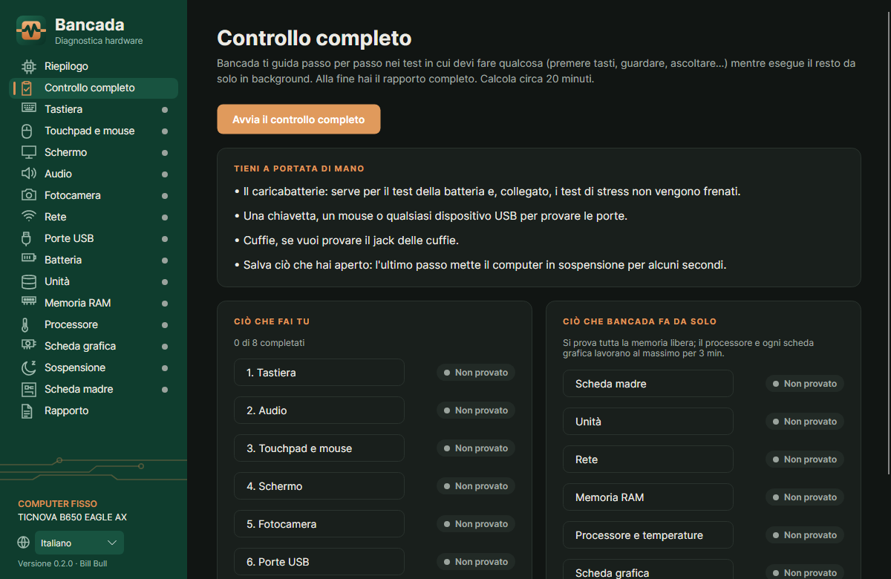
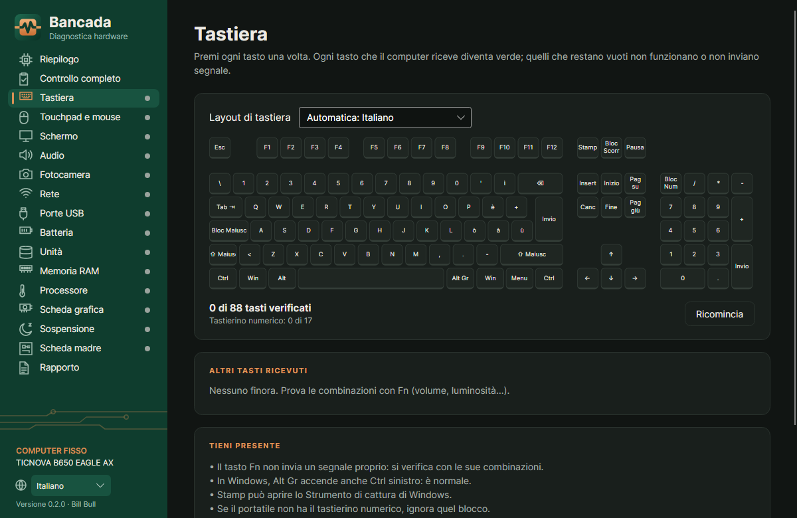
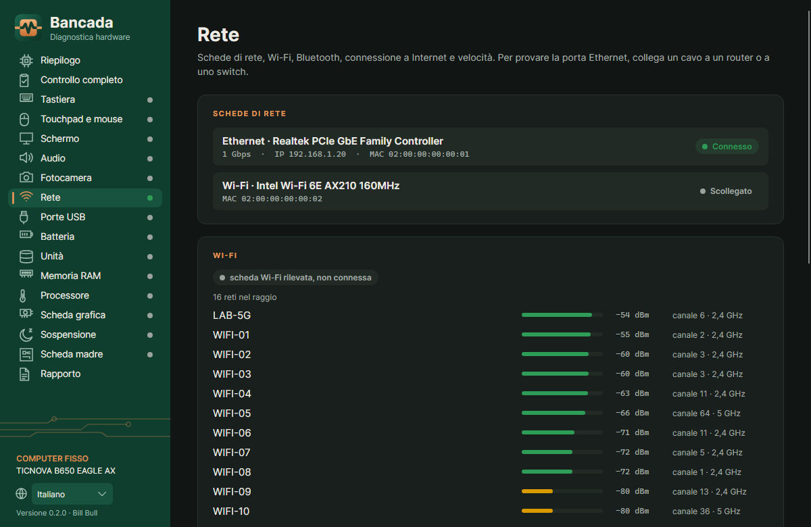
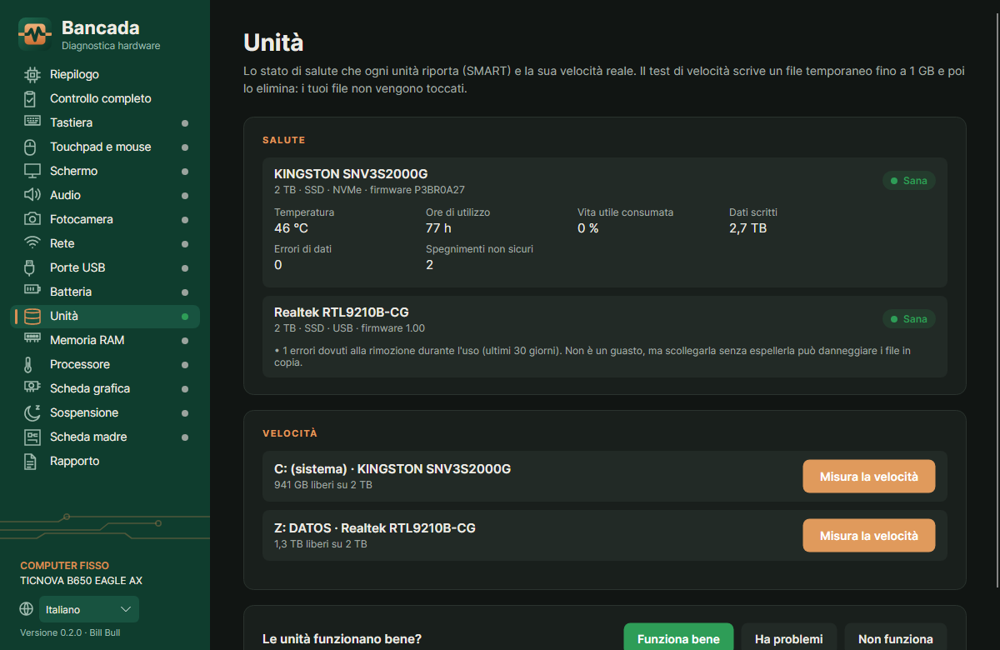
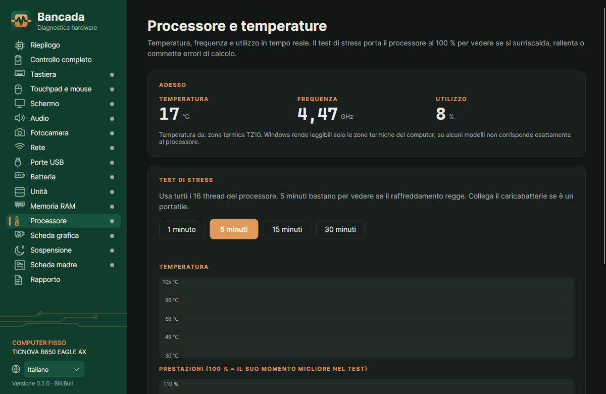
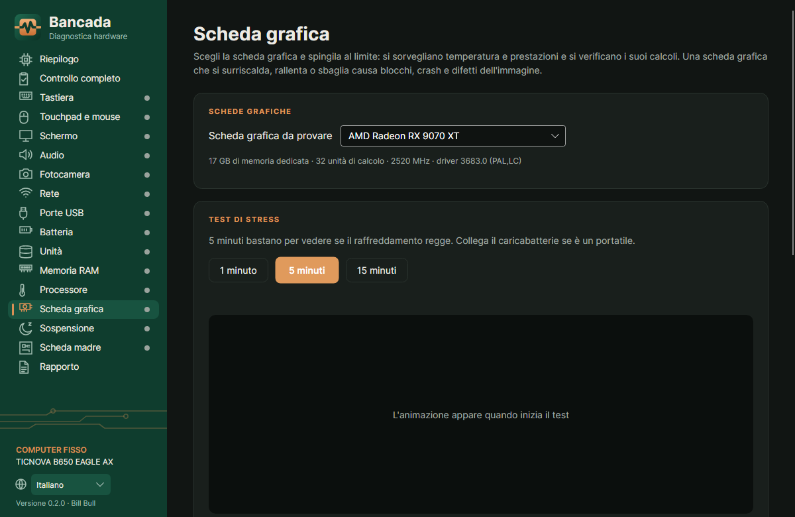
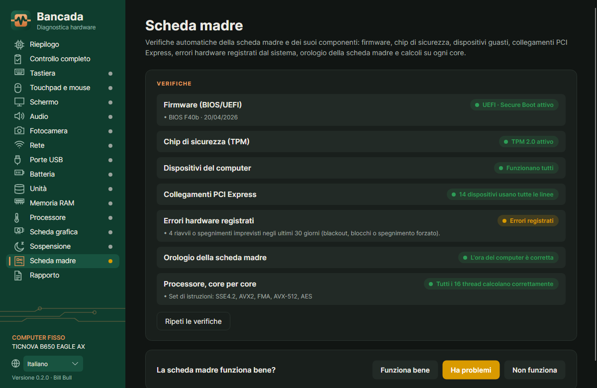
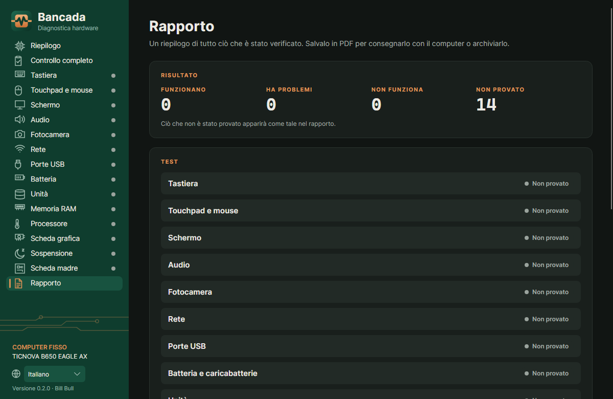

Guida all'uso di Bancada
Prima di iniziare
- Scarica l'eseguibile per il tuo sistema dall'ultima versione. Puoi portarlo su una chiavetta: non si installa e non lascia nulla sul computer tranne le sue impostazioni (lingua e tastiera).
- Aprilo sul computer da controllare.
- Windows: doppio clic. La prima volta può comparire «PC protetto da Windows»: fai clic su Ulteriori informazioni › Esegui comunque.
- Linux:
chmod +x Bancada-linux-x64 && ./Bancada-linux-x64.
- Tieni a portata di mano: il caricabatterie (se è un portatile), una chiavetta o un mouse USB per le porte e, per provare il jack delle cuffie, delle cuffie.
- Permessi. Quasi tutto funziona come utente normale. Come amministratore (Windows) o con
sudo(Linux) vedi anche il numero di serie, i moduli di RAM e lo SMART completo delle unità SATA.
La lingua si sceglie in fondo alla barra laterale (icona del globo) e viene ricordata.
La finestra principale
A sinistra c'è l'elenco dei test. Il punto colorato accanto a ciascuno indica il verdetto: Funziona bene, Ha problemi, Non funziona o non provato. Alla fine di ogni test c'è una barra per segnare il verdetto; nei test automatici è già proposto e puoi cambiarlo.

Il Riepilogo mostra cosa c'è nel computer: marca, modello e numero di serie, tipo (portatile, fisso, all-in-one, mini PC), processore, RAM e slot occupati, schede grafiche, unità e la loro salute, batteria, scheda madre e BIOS.
Controllo completo (guidato)

Fai clic su Avvia il controllo completo. Bancada ti guida passo per passo nei test in cui devi fare qualcosa: tastiera → audio → touchpad → schermo → fotocamera → USB → batteria → sospensione. Nel frattempo, in background e uno dopo l'altro, esegue quelli automatici: scheda madre → unità → rete → memoria → processore → ogni scheda grafica. Il pannello in basso mostra a che punto sono.
- I test di stress aspettano che tu finisca quello dell'audio, così il rumore delle ventole non disturba.
- Puoi saltare un passo; ciò che non viene provato appare come «Non provato» nel rapporto.
- L'ultimo passo sospende il computer per alcuni secondi: salva ciò che hai aperto.
- Calcola circa 20 minuti. Alla fine, fai clic su Termina e vedi il rapporto.
I test uno per uno
Tastiera

Premi ogni tasto una volta: quelli che arrivano diventano verdi; quelli che restano vuoti non funzionano o non inviano segnale. Il layout segue la lingua e la tastiera del sistema; puoi sceglierne un altro dall'elenco (spagnolo, latinoamericano, USA, Regno Unito, Portogallo, Brasile ABNT2, tedesco, francese e italiano). I tasti multimediali (combinazioni con Fn) compaiono in «Altri tasti ricevuti». In Windows, Alt Gr accende anche Ctrl sinistro e Stamp può aprire lo Strumento di cattura: è normale.
Touchpad e mouse
Muovi il puntatore sull'area finché non è piena. Se in qualche punto si ferma o salta, quella parte del touchpad è danneggiata: passa anche su bordi e angoli. Prova clic sinistro, destro e centrale, doppio clic, trascinamento, la rotellina o lo scorrimento a due dita, i pulsanti laterali, lo schermo tattile e la penna se ci sono.
Schermo
Avvia il test dello schermo riempie lo schermo di colori pieni, sfumature e griglia. Clic, Spazio o → va avanti; ← torna indietro; Esc esce. Cerca pixel morti o bloccati, macchie, perdite di luce ai bordi, bande nelle sfumature e luminosità non uniforme.
Audio
Ogni pulsante suona da un solo lato; lo sweep dai bassi agli acuti serve a sentire se qualcosa vibra, ronza o gracchia. Ascolta il microfono mostra il livello dal vivo (parla o batti le mani) e Registra 5 secondi e riascolta ti fa sentire cosa ha captato. Poi collega le cuffie e ripeti per provare il jack.
Fotocamera
Accendi ogni fotocamera e controlla che l'immagine sia nitida, con colori normali e senza interruzioni. Se è nera, controlla lo sportellino della privacy o il tasto che la disattiva. L'immagine non viene mai salvata e non esce mai dal computer.
Rete

Elenca le schede fisiche con la velocità del collegamento, il Wi-Fi con le reti vicine (segnale, canale e banda) e il Bluetooth. La connessione si verifica passo per passo (router → DNS → Internet → sito sicuro) per vedere dove si interrompe. Misura la velocità fa 10 s di download e 10 s di upload con i server di Cloudflare. Per provare la porta Ethernet, collega un cavo a un router o a uno switch.
Porte USB
Collega una chiavetta, un mouse o qualsiasi dispositivo a ogni porta, una alla volta: ogni porta che risponde viene segnata con la sua velocità reale. Se un dispositivo USB 3 si collega a velocità USB 2, prova un altro cavo; se non cambia nulla, il connettore della porta potrebbe essere danneggiato. Mouse e tastiera vanno sempre a USB 1 o 2.
Batteria e caricabatterie
Mostra la capacità nominale e attuale, la salute, i cicli e il consumo dal vivo.
- Test del caricabatterie: scollega e ricollega seguendo i passi; verifica caricabatterie, cavo e connettore.
- Test di scarica: con il caricabatterie scollegato, misura quanto dura davvero la batteria. Scegli cosa fa il computer (a riposo con lo schermo acceso, navigazione, video o carico massimo), quando fermarsi (a tempo o a una percentuale) e la luminosità. Rileva cali improvvisi della percentuale (celle in cattivo stato) e un indicatore starato. Fanne diversi con usi diversi: il rapporto li riunisce in una tabella di autonomia.
Unità

Salute SMART di ogni unità (temperatura, ore, vita utile consumata, settori danneggiati), errori di lettura e scrittura registrati dal sistema e velocità reale di lettura, scrittura e lettura casuale 4 KB. Il test di velocità scrive un file temporaneo fino a 1 GB e poi lo elimina: i tuoi file non vengono toccati.
Memoria RAM
Riempie la memoria libera con 8 schemi e verifica che si rilegga esattamente ciò che è stato scritto. Un solo errore significa che un modulo è difettoso; prova i moduli uno alla volta per capire quale. Con il sistema in funzione si può provare solo la memoria libera: per provarla tutta, Bancada apre Diagnostica memoria Windows o ti spiega come avviare MemTest86+ su Linux.
Processore

Temperatura, frequenza e utilizzo dal vivo. Il test di stress usa tutti i thread e sorveglia se si scalda troppo, se rallenta per la temperatura o se sbaglia qualche calcolo. 5 minuti bastano per vedere se il raffreddamento regge; se è un portatile, collega il caricabatterie.
Scheda grafica

Scegli la scheda per nome (dedicata, integrata o qualsiasi altra) e spingila al massimo: temperatura e prestazioni vengono sorvegliate e i suoi calcoli verificati. Verifica la memoria video cerca guasti della VRAM, quelli che causano linee e punti colorati. Usa OpenCL, incluso nei driver NVIDIA, AMD e Intel; su Linux potrebbe servire installare il pacchetto OpenCL della tua scheda.
Sospensione
Sospende il computer e verifica che torni bene: quanto ha dormito, se la rete si ripristina e se qualche dispositivo ha smesso di funzionare. Sui computer con sospensione moderna, riattivalo tu con un tasto come farebbe il cliente. Se non torna e bisogna forzare lo spegnimento, alla riapertura Bancada lo segna come guasto.
Scheda madre

Verifiche automatiche: firmware e avvio protetto, chip TPM, dispositivi guasti o senza driver, collegamenti PCI Express con meno linee del dovuto, errori hardware registrati, orologio della scheda madre (batteria CMOS) e calcolo corretto su ogni core.
Il rapporto

Riunisce tutti i test con misure, note e verdetti. Aggiungi le tue note (stato fisico, ammaccature, cosa ha detto il cliente…) e fai clic su Salva il rapporto in PDF: viene salvato in Documenti e include il numero di serie del computer.
Problemi frequenti
| Cosa succede | Cosa fare |
|---|---|
| Windows avvisa che il programma non è sicuro | L'eseguibile non è ancora firmato: Ulteriori informazioni › Esegui comunque. |
| Nessuna temperatura del processore in Windows | Alcuni computer la comunicano solo a programmi con un proprio driver. Il test di stress rileva comunque perdite di prestazioni ed errori. |
| «Non c'è nessun driver OpenCL installato» nella scheda grafica | Installa o aggiorna il driver dal sito di NVIDIA, AMD o Intel. Su Linux: intel-opencl-icd, mesa-opencl-icd o ROCm. |
| Nessuna rete Wi-Fi in Windows | Attiva Impostazioni › Privacy e sicurezza › Posizione › Consenti alle app desktop di accedere alla posizione. |
| Nessun dato SMART su Linux | Installa smartmontools e avvia Bancada con sudo. |
| Su Linux non si avvia e chiede libICE o libSM | Installa libice6 e libsm6 (servono all'interfaccia X11). |